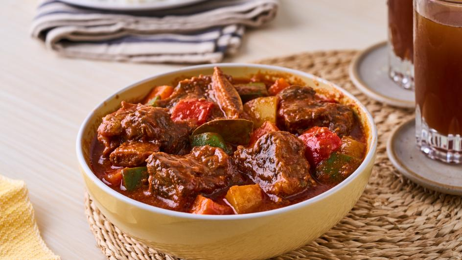

Beef Caldereta is a rich and hearty Filipino stew, slow-cooked to perfection with tender beef, vibrant vegetables, and a deep, savory tomato-based sauce.
Ingredients
- 1kg Australian/New Zealand Beef Cubes
- 3 pieces garlic cloves
- 1 piece onion
- 1 piece red bell pepper
- 1 piece green bell pepper
- 1/2 cup of tomato sauce
- 2 cups potatoes
- 2 cups carrots
- 1/4 cup cooking oil
- Salt and pepper to taste
- 1 can of Reno liver spread
Method
- Marinate the beef with lemon juice, soy sauce (toyo), and black pepper for at least 30 minutes.
- Heat a pan over medium heat and sauté the garlic, onion, and celery until fragrant.
- Add the marinated beef to the pan and stir it together with the sautéed garlic, onion, and celery.
- Let the beef cook and blend with the aromatics for a few minutes.
- Pour the remaining marinade sauce into the pan and mix well.
- Add two tablespoons of tomato sauce and stir to combine.
- Cover the pan with a lid and let it simmer for 30 minutes.
- In a separate pan, heat oil over medium heat.
- Fry the potatoes and carrots until they are golden brown. Once done, remove and set aside.
- Check the beef occasionally and wait until it becomes tender.
- Once the beef is tender, taste and adjust the seasoning as needed (add salt and pepper if necessary).
- Stir in Reno liver spread, mixing well until fully blended into the sauce.
- Add the fried potatoes and carrots to the pan with the beef and mix well.
- Let everything simmer for a few more minutes to blend the flavors.
- Serve hot and enjoy!